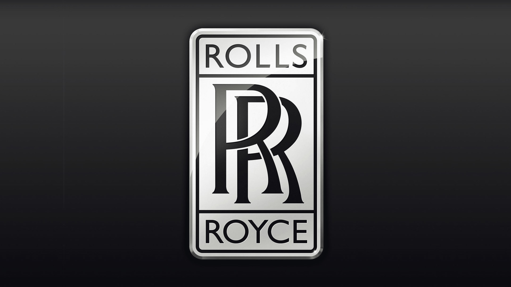

В 1998 году владельцы концерна Vickers решили избавиться от активов Rolls-Royce Motors. Наиболее привлекательным покупателем был немецкий автопроизводитель BMW, который уже поставлял двигатели и компоненты для автомобилей Rolls-Royce и Bentley, но итоговое предложение BMW, составившее £340 млн, перебил другой немецкий автогигант Volkswagen, предложивший £430 млн.
VW получил от Vickers права на статуэтку Дух Экстаза и фирменную решётку радиатора Rolls-Royce, на марку Bentley (включая логотип), модели (включая документацию по ним), производство и производственные помещения, штаб-квартиру. Но VW остался без торговой марки и логотипа Rolls-Royce в виде совмещённых букв {\displaystyle RR}RR, потому что машиностроительная компания Rolls-Royce plc, имевшая в собственности права на их использование, решила сохранить их за собой в случае продажи автомобильного подразделения. Rolls-Royce plc переуступила своё право на торговую марку и логотип Rolls-Royce, BMW за 40 млн. $, потому что обе фирмы имели совместные проекты.
Пункт в договоре BMW, на поставку двигателей и компонентов для Rolls-Royce Motors, позволял расторгнуть договор и прекратить поставки, уведомив вторую сторону за год. VW был не в состоянии в короткие сроки изменить конструкцию выпускавшихся моделей для использования других двигателей. Расколотый исторический облик Rolls-Royce (название и логотип, решетка радиатора и Дух Экстаза), а также опасность остановки производства из-за поставок двигателей, вынудил BMW и VW сесть за стол переговоров.
По итогам переговоров VW согласился продать BMW права на решетку радиатора и Дух Экстаза, взамен на продолжение поставок двигателей и компонентов BMW на производство до 2003 года. Также VW продолжал производить машины под маркой Rolls-Royce с 1998 по 2003 год, тем самым давая BMW время на строительство штаб-квартиры, нового завода в Гудвуде[en] (северо-восточнее города Чичестер, графство Западный Суссекс) и разработку полностью новой модели Phantom.
Деятельность
В 2007 году объём производства составил 1009 единиц, впервые превысив отметку 1000 автомобилей. В 2011 году был установлен рекорд по объёму продаж за всю историю компании — 3538 машин.
Автомобили
Rolls-Royce Phantom
2003 Phantom — представленный в январе 2003 года на детройтской североамериканской международной автомобильной выставке стала первой моделью компании Rolls-Royce Motor Cars Limited. Подразделение BMW не имело технической или корпоративной связи с самой компанией Rolls-Royce, за исключением торговой марки и логотипа. Автомобиль был оснащён двигателем 6,75 л V12, производства BMW. Часть электроники была также производства компании и её подрядчиков, однако большинство деталей было оригинальными для автомобиля. В отличие от Mini (который на 90 % был разработан и производился в Великобритании) большая часть деталей производилась в Германии, хотя сборка и ходовые испытания автомобилей проводятся на фабрике в Гудвуде. Вместе с тем, новый автомобиль имеет пропорции и линии, характерные для классических автомобилей Rolls-Royce. Автомобиль доступен в стандартной и удлинённой версии, стоимость автомобиля начинается от £250,000.
В 2007 году компания объявила о выходе ограниченной серии из 25 седанов Rolls-Royce Phantom, окрашенных в необычный белый цвет Metallic Ghost Silver, со статуэткой «Дух Экстаза» из серебра и особой отделкой салона. Выпуск серии приурочен к 100-летнему юбилею модели Rolls-Royce Silver Ghost.
2007 Phantom Drophead Coupe — кабриолет с мягкой складной крышей был разработан на базе прототипа Rolls-Royce 100ЕХ.
2018 Rolls-Royce Cullinan — первый в истории компании Rolls-Royce внедорожник, который официально был представлен в 2018 году[1].
